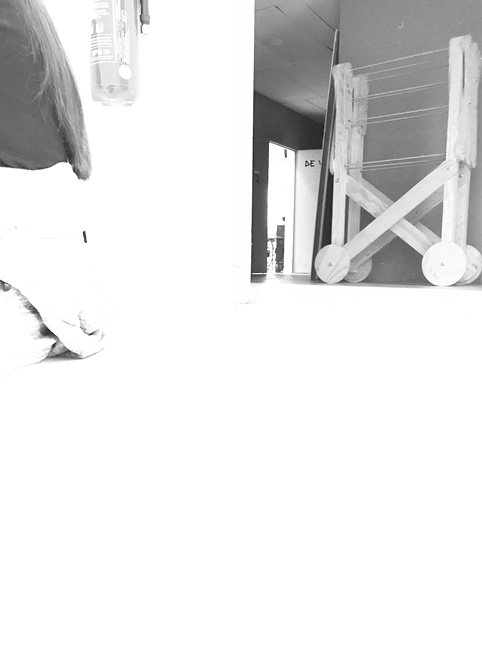
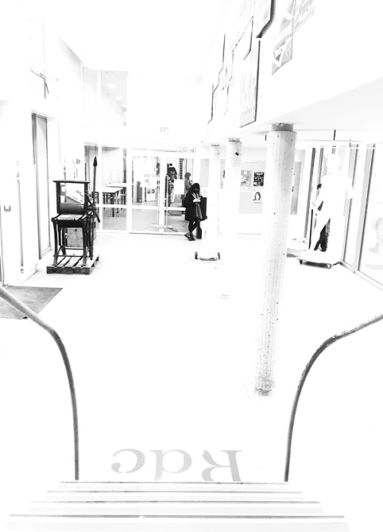
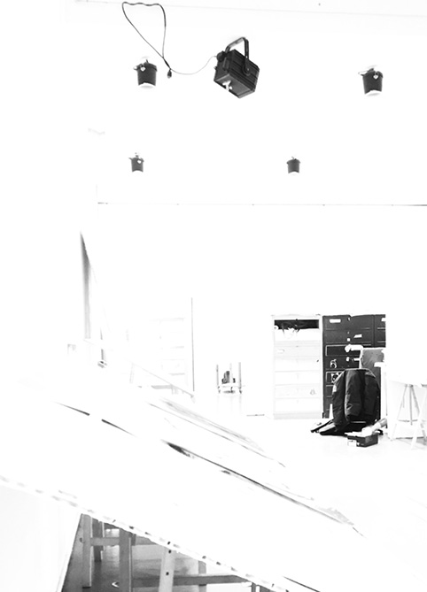
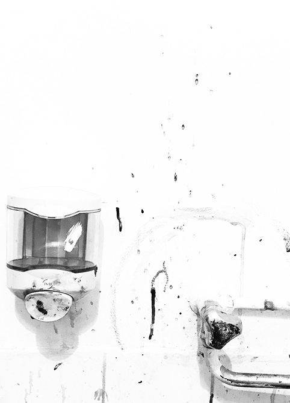
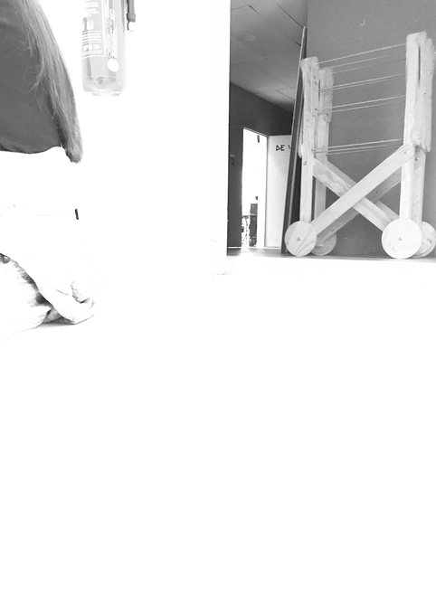
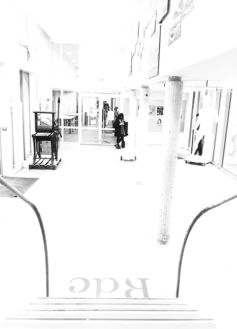
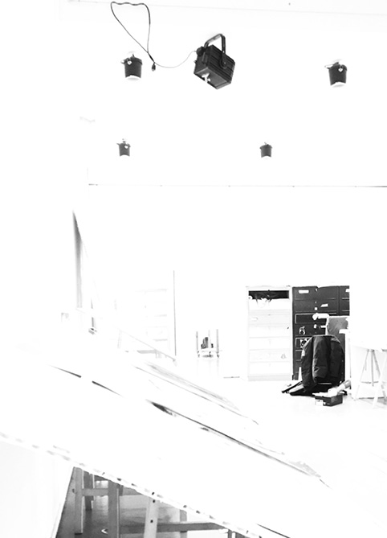
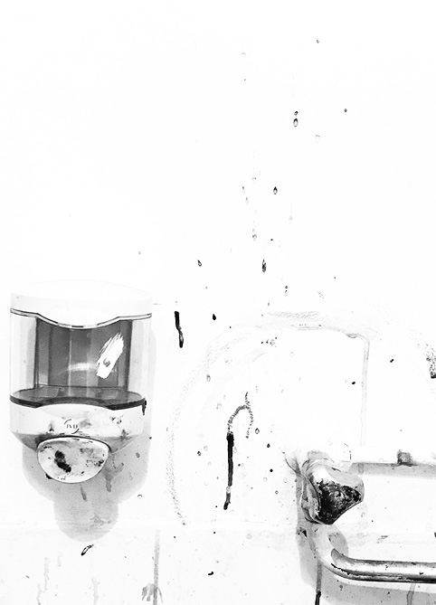
Au lieu de présenter l'ésad (mon école) sous forme de photos documentaires, j'ai voulu montrer une école de plus en plus méconnaissable. Plus les photos défilent, plus elles deviennent blanches. L'ésad disparait petit à petit, pour ne devenir que tâches.
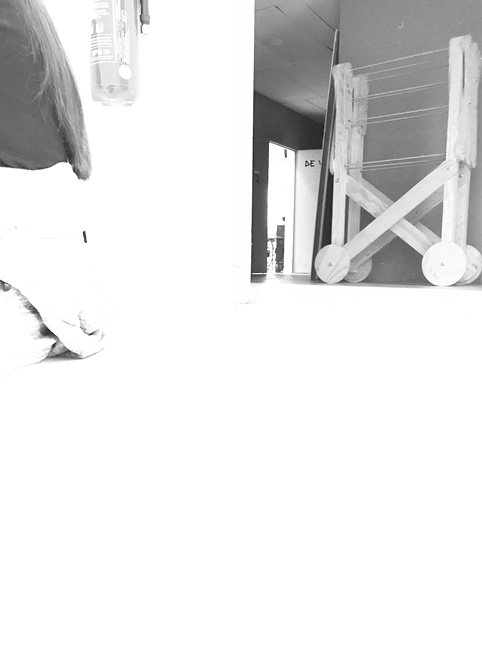
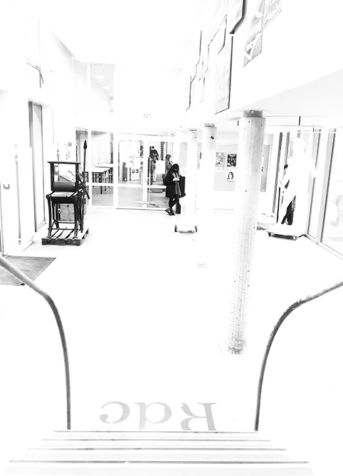
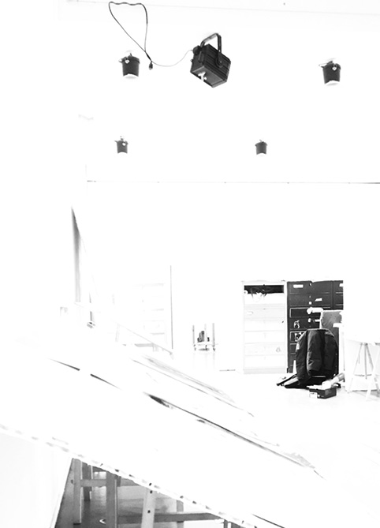
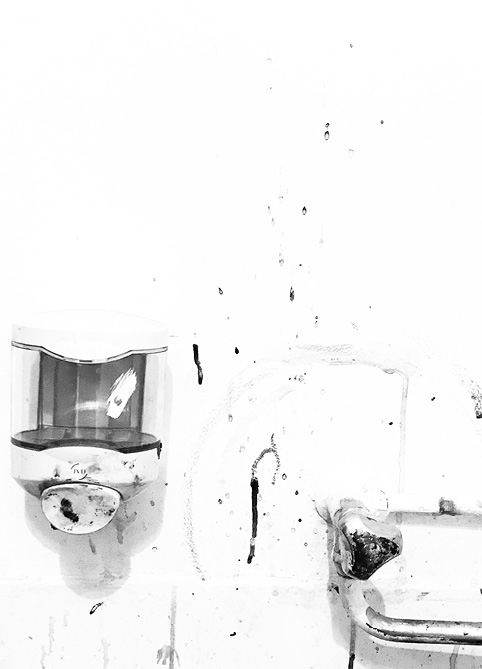